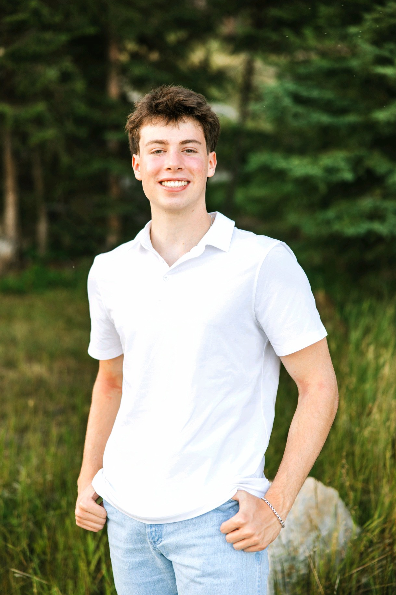
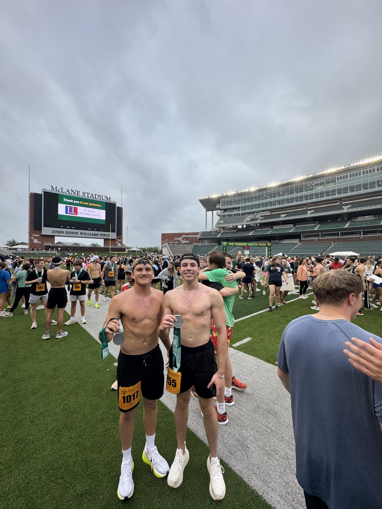
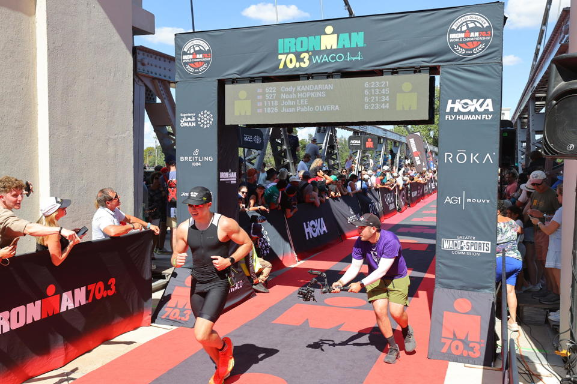
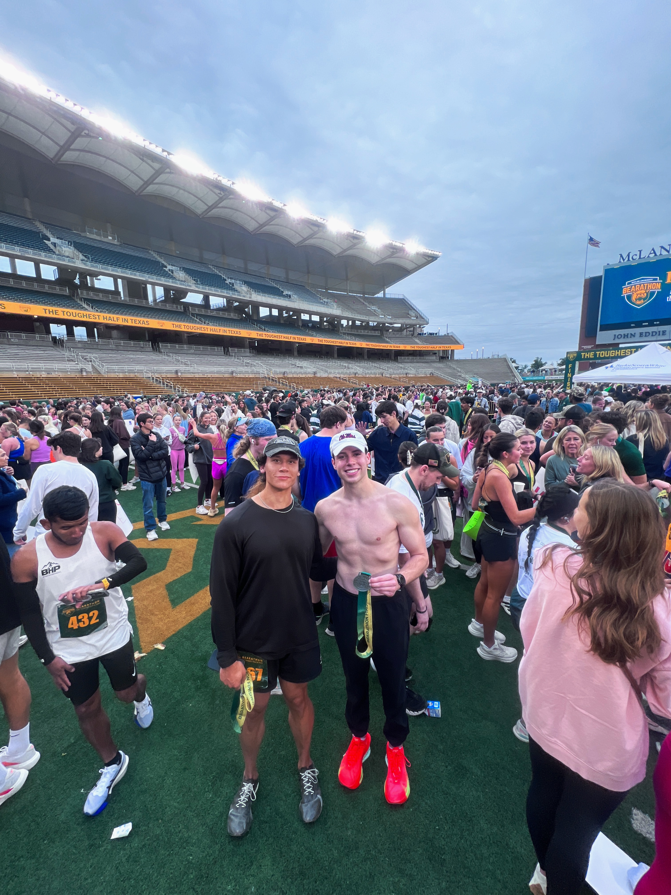

Kandarian.
Incoming software engineer at SpaceX
working on the Raptor engine.

I specialize in training ML models, backend engineering, and dealing with lots of data. I am currently studying data science at Baylor and am also drawn to books and philosophy.
Selected
work, (03)
Entry
Entry turns a sentence into a sourced contact list. Type "fintech founders in NYC who raised seed in 2025" and get matched profiles from 80M+ professionals: searchable by intent, not filter dropdowns. Co-founded the company and built the platform end-to-end: Next.js frontend, Express API, FastAPI AI service with pgvector hybrid search, and a Claude Desktop MCP for outreach.
Zo
A 24/7 multilingual livestream shopping agent built on Gemma E4B via the Cactus runtime. A three-tier pre-rendered MP4 architecture keeps ~90% of responses fully on-device, dropping per-seller cost from $9,628 to $144 a month.
SpaceX Daily Digest
An automated daily briefing scraping 7+ space news sources and curated X accounts, synthesizing through the Claude API, and publishing static HTML via GitHub Actions. Parallel fetching, dedup, and resilient RSS/Nitter fallbacks.
Outside of coding
(Endurance)

Bearathon ’25 — Waco, TX

Ironman 70.3 — Waco, TX · October 2025

Bearathon ’26 — McLane Stadium